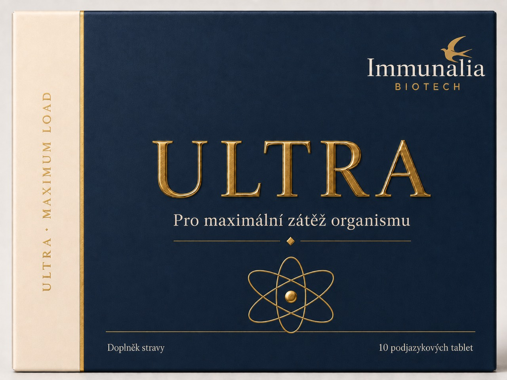

Immunalia Professional
Vyberte svou
odbornou větev.
Každý specialista vstupuje přímo k produktu, protokolu a formulářům svého oboru. Obecná spotřebitelská komunikace je oddělena.

Stomatologie
Dental Recover
Extrakce osmiček, implantace a stomatochirurgické výkony. Včetně formuláře pro průběžné vyplňování a fotodokumentaci.

Gynekologie
Flow Professional
Pánevní a gynekologický program, endometrióza, stav před a po výkonu a laboratorní trendy.

Chirurgie · Urologie · Dermatologie
Post‑Op Recover
Pooperační sledování bolesti, otoku, hojení, funkce a návratu k běžné aktivitě.

Sportovní a výkonová medicína
ULTRA Professional
Nahrávání HR, HRV, RR, výkonových souborů, tréninkových dat a subjektivního hodnocení.